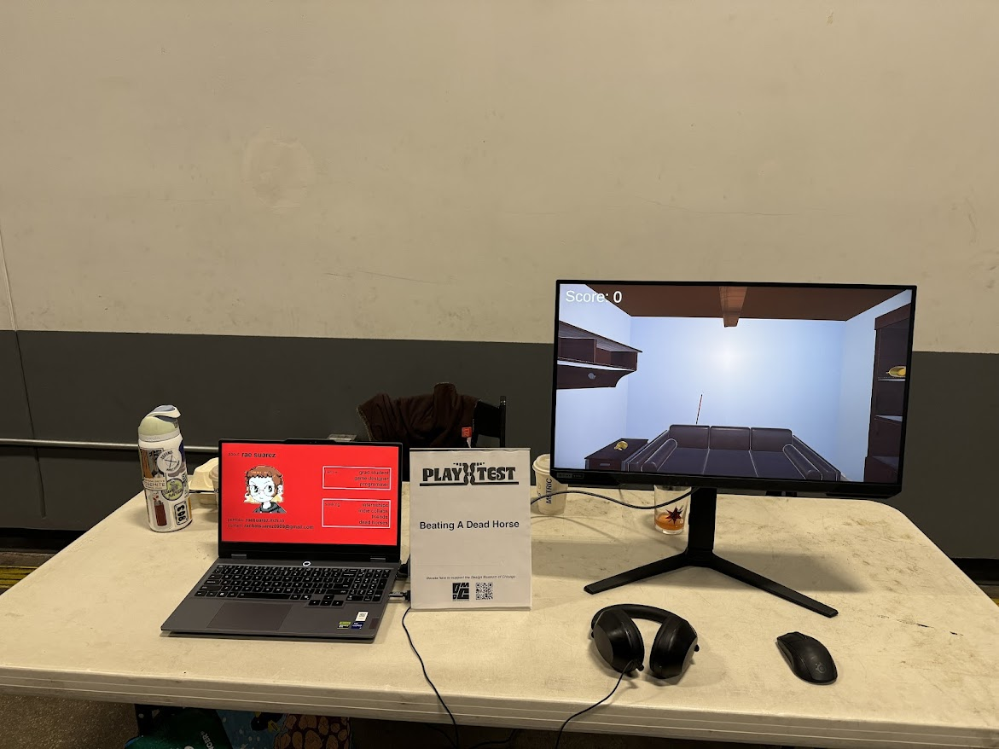
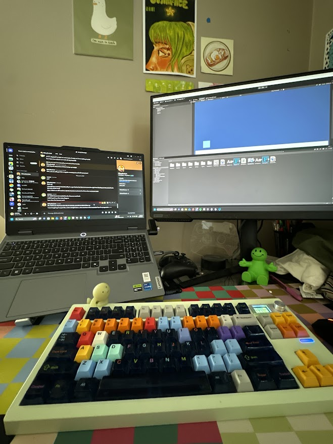
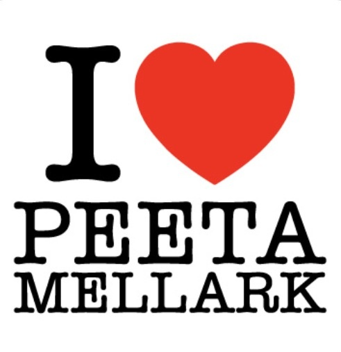

what's new
guys i am dreaming and bleeding game design and code it has infected my dreams. its not even finals yet
i might actually lose my mind in march. i am so close to losing it genuinely actually. oh i quit working at
the vr lab i was kind of working in bc i had too much to do and also my coworker was a bitch. i guess that is news!
recent adventures
theres beer in those things i think idk i wasn't playing attention
- riley suprised me for vday and we went to milwaukee. i drank so much miller high life it was awesome.
otherwise it pales in comparison to chicago. also we made it to our 8:25am train at 8:22am and they didn't let
us on i almost murdered everyone at chicago union station.

my lonely ass corner
- i playtested my game beating a dead horse at a playtest event hosted by the design museum chicago. it was very
cool to be selected but it was kind of exhausting and idk not very fulfilling? half of the judges didn't show up
which was disappointing bc i wanted to meet them and the tables near me didn't show or left early. also i was in a hallway
in the back so kind of hidden. still a cool opportunity though.

- yeah otherwise i have just been working on two games for my classes this term. next term i get to take art games which is cool.
- oh also i have an interview for a swe internship at warner bros but its like game design focused i think. not sure how i will do but it'll be cool if i get it
consumer corner
my faves from this month
i've been reading a lot at work actually because i have nothing else to do. so i read all of the hunger games books in chronological order it was devastating but so good.
played: celeste
 listened: overagain by devon again
listened: overagain by devon again
watched: still da pitt s2

read: the entire hunger games series